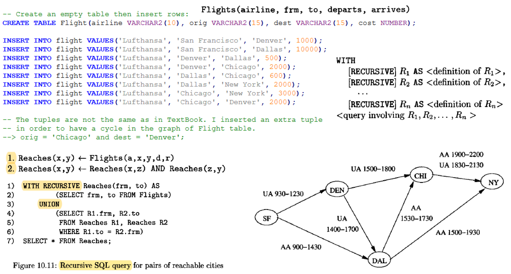

Recursion in SQL and Datalog

Setting Up the Flight Table
-- Create an empty table then insert rows:
CREATE TABLE Flight(airline VARCHAR2(10), orig VARCHAR2(15), dest VARCHAR2(15), cost NUMBER);
INSERT INTO flight VALUES('Lufthansa', 'San Francisco', 'Denver', 1000);
INSERT INTO flight VALUES('Lufthansa', 'San Francisco', 'Dallas', 10000);
INSERT INTO flight VALUES('Lufthansa', 'Denver', 'Dallas', 500);
INSERT INTO flight VALUES('Lufthansa', 'Denver', 'Chicago', 2000);
INSERT INTO flight VALUES('Lufthansa', 'Dallas', 'Chicago', 600);
INSERT INTO flight VALUES('Lufthansa', 'Dallas', 'New York', 2000);
INSERT INTO flight VALUES('Lufthansa', 'Chicago', 'New York', 3000);
INSERT INTO flight VALUES('Lufthansa', 'Chicago', 'Denver', 2000);
-- The tuples are not the same as in TextBook. I inserted an extra tuple
-- in order to have a cycle in the graph of Flight table.
--> orig = 'Chicago' and dest = 'Denver';
Flight Table
| Airline | Origin | Destination | Cost |
|---|---|---|---|
| Lufthansa | San Francisco | Denver | 1000 |
| Lufthansa | San Francisco | Dallas | 10000 |
| Lufthansa | Denver | Dallas | 500 |
| Lufthansa | Denver | Chicago | 2000 |
| Lufthansa | Dallas | Chicago | 600 |
| Lufthansa | Dallas | New York | 2000 |
| Lufthansa | Chicago | New York | 3000 |
| Lufthansa | Chicago | Denver | 2000 |
DATALOG Programs
Datalog is a logical query language (Data Logic). See textbook (Ullman ch. 5.3, 5.4 and 10.2)
Let's see relation Reaches(x,y) which answers the following query.
For what pairs of cities (x, y) is it possible to get from city x to city y by taking one or more flights?
A Recursive DATALOG Program for the REACHES Table
Reaches(X,Y) <-- Flight(,X,Y,)
Reaches(X,Y) <-- Reaches(X,Z) AND Reaches(Z,Y) AND X <> Y
Most DBMS-s allow only linear recursion in recursive queries, which means: no rule has more than one subgoal that is mutually recursive with the head.
---> if there is a cycle involving R and S, they are mutually recursive
In the previous datalog program the second rule violates this requirement.
The datalog program below contains only linear recursion:
Reaches(X,Y) <-- Flight(,X,Y,)
Reaches(X,Y) <-- Flight(,X,Z,) AND Reaches(Z,Y) AND X <> Y
SQL Implementation: Flight is the First Edge on the Route
WITH reaches(orig, dest) AS
(
SELECT orig, dest FROM flight
UNION ALL
SELECT flight.orig, reaches.dest FROM flight, reaches
WHERE flight.dest = reaches.orig AND flight.orig <> reaches.dest
)
CYCLE orig, dest SET is_cycle TO 'Y' DEFAULT 'N'
SELECT distinct orig, dest, is_cycle FROM reaches order by 1,2,3;
Results: --------- Chicago Dallas N Chicago Denver N Chicago New York N Chicago New York Y Dallas Chicago N ...
SQL Implementation: Flight is the Last Edge on the Route
WITH reaches(orig, dest) AS
(
SELECT orig, dest FROM flight
UNION ALL
SELECT reaches.orig, flight.dest FROM reaches, flight
WHERE reaches.dest = flight.orig AND reaches.orig <> flight.dest
)
CYCLE orig, dest SET is_cycle TO 'Y' DEFAULT 'N'
SELECT distinct orig, dest, is_cycle FROM reaches order by 1,2,3;
Results: --------- Chicago Dallas N Chicago Denver N Chicago New York N Dallas Chicago N Dallas Chicago Y Dallas Denver N Dallas New York N Denver Chicago N ...
Non-Linear Recursion (Error)
WITH reaches(orig, dest) AS
(
SELECT orig, dest FROM flight
UNION ALL
SELECT r1.orig, r2.dest FROM reaches r1, reaches r2
WHERE r1.dest = r2.orig AND r1.orig <> r2.dest
)
CYCLE orig,dest SET is_cycle TO 'Y' DEFAULT 'N'
SELECT distinct orig, dest, is_cycle FROM reaches order by 1,2,3;
Error message:
--------------
32490. 00000 - "recursive query name referenced more than once in recursive branch of recursive WITH clause element"
*Cause: The recursive component of the UNION ALL in a recursive WITH clause
element referenced the recursive query name more than once. Only
one reference to the recursive query name is allowed in the
recursive branch of a recursive WITH clause element.
SQL Query with Route Edges Listed
WITH reaches(orig, dest, edges) AS
(
SELECT orig, dest, orig||'.'||dest FROM flight
UNION ALL
SELECT reaches.orig, flight.dest, reaches.edges||'.'||flight.dest FROM reaches, flight
WHERE reaches.dest = flight.orig AND reaches.orig <> flight.dest
)
CYCLE orig,dest SET is_cycle TO 'Y' DEFAULT 'N'
SELECT distinct orig, dest, edges, is_cycle FROM reaches order by 1,2,3;
Results: --------- Chicago Dallas Chicago.Denver.Dallas N Chicago Denver Chicago.Denver N Chicago New York Chicago.Denver.Dallas.New York N Chicago New York Chicago.New York N Dallas Chicago Dallas.Chicago N Dallas Chicago Dallas.Chicago.Denver.Chicago Y ...
Hierarchical Queries: CONNECT BY
Oracle provides a special syntax, START WITH ... CONNECT BY, for querying data with a hierarchical or tree-like structure.
START WITH: Identifies the root row(s) of the hierarchy.CONNECT BY: Defines the parent-child relationship between rows. ThePRIORoperator is used to distinguish the parent row's column.
Evaluation Order
START WITHselects the root rows.CONNECT BYfinds the children of the current rows.- The query traverses the tree in a depth-first manner.
- The
WHEREclause filters the rows.
Pseudocolumns in Hierarchical Queries
LEVEL: Returns the level of the node in the hierarchy (1 for the root, 2 for its children, etc.).CONNECT_BY_ISCYCLE: Returns 1 if the current row has a child that is also its ancestor (detects cycles). Requires theNOCYCLEkeyword.CONNECT_BY_ISLEAF: Returns 1 if the current row is a leaf node (has no children).
Operators in Hierarchical Queries
PRIOR: A unary operator used in theCONNECT BYclause to refer to the parent row.CONNECT_BY_ROOT: A unary operator that returns the value of the root node's column for any given row in the hierarchy.SYS_CONNECT_BY_PATH(column, char): A function that returns the path of a column's values from the root to the current node, delimited bychar.
Example: Employee Hierarchy
SELECT LPAD(' ', 2*(LEVEL-1)) || ename AS employee, empno, mgr, LEVEL
FROM nikovits.emp
START WITH job='PRESIDENT'
CONNECT BY PRIOR empno = mgr;
Results:
---------
KING 7839 1
JONES 7566 2
SCOTT 7788 3
ADAMS 7876 4
FORD 7902 3
SMITH 7369 4
BLAKE 7698 2
Ordering Siblings
Use ORDER SIBLINGS BY to order the rows at the same level of the hierarchy.
SELECT LPAD(' ', 2*(LEVEL-1)) || ename AS employee, empno, mgr
FROM nikovits.emp
START WITH job='PRESIDENT'
CONNECT BY PRIOR empno = mgr
ORDER SIBLINGS BY ename;
Handling Cycles
If your data may contain cycles, use the NOCYCLE keyword in the CONNECT BY clause to prevent an infinite loop error.
SELECT LPAD(' ', 4*level) ||orig, dest, level-1 turnovers
FROM flight
START WITH orig = 'San Francisco'
CONNECT BY NOCYCLE PRIOR dest = orig;
Example: Finding All Reachable Cities
This query finds all cities reachable from any starting point, effectively creating the Reaches relation.
SELECT distinct CONNECT_BY_ROOT orig AS orig, dest AS dest
FROM flight
WHERE CONNECT_BY_ROOT orig <> dest
START WITH 1=1
CONNECT BY NOCYCLE PRIOR dest = orig
ORDER BY orig, dest;
Results: --------- Chicago New York Dallas Chicago ... San Francisco New York
Recursive WITH vs. CONNECT BY
CONNECT BYis excellent for traversing existing hierarchical data.- Recursive
WITHis more powerful and can generate new values and structures not present in the original data, such as calculating a factorial series.
Example: Factorial Calculation with Recursive WITH
```sql WITH factorial(n, val) AS ( SELECT 0, 1 FROM dual UNION ALL SELECT n+1, (n+1)*val FROM factorial WHERE n < 40